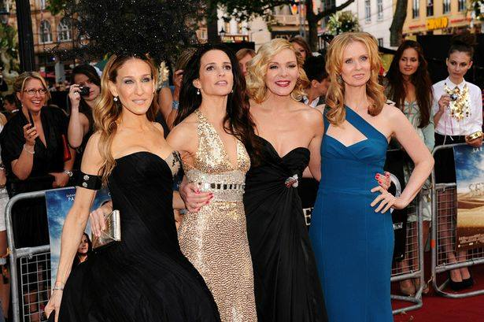

This article is about the TV series. For the book on which it is based,see Sex and the City (book). For its subsequent films, see Sex and the City (film) and Sex and the City 2. Sex and the City is an American television romantic sitcom created by Darren Star and produced by HBO. Broadcast from 1998 until 2004, the original run of the show had a total of 94 episodes. Throughout its six-year run, the show received contributions from various producers, writers and directors, perhaps most significantly from Michael Patrick King. et and filmed in New York City and based on the 1997 book of the same name by Candace Bushnell, the show follows the lives of a group of four women—three in their mid-thirties and one in her forties—who, despite their different natures and ever-changing sex lives, remain inseparable and confide in each other. Starring Sarah Jessica Parker (as Carrie Bradshaw), Kim Cattrall (as Samantha Jones), Kristin Davis (as Charlotte York), and Cynthia Nixon (as Miranda Hobbes), the quirky series had multiple continuing storylines that tackled relevant and modern social issues such as sexuality, safe sex, promiscuity and femininity, while exploring the difference between friendships and romantic relationships. The deliberate omission of the better part of the early lives of the four women was the writer's way of exploring social life - from sex to relationships - through each of their four very different, individual perspectives.The series received both acclaim and criticism for its subjects and characters, and spawned two feature films, Sex and the City (2008) and its sequel Sex and the City 2 (2010), and a prequel series by The CW, The Carrie Diaries. It also won seven of its 54 Emmy Award nominations, eight of its 24 Golden Globe Award nominations, and three of its 11 Screen Actors Guild Award nominations. Sex and the City still airs in syndication worldwide and has been listed on Entertainment Weeklys end-of-the-decade "best of" list and as one of Time magazine's 100 Best TV Shows of All-TIME.The show placed #5 on Entertainment Weekly's "New TV Classics" list. In 2013, TV Guide ranked it at #40 on its list of the Best Series of All Time.
